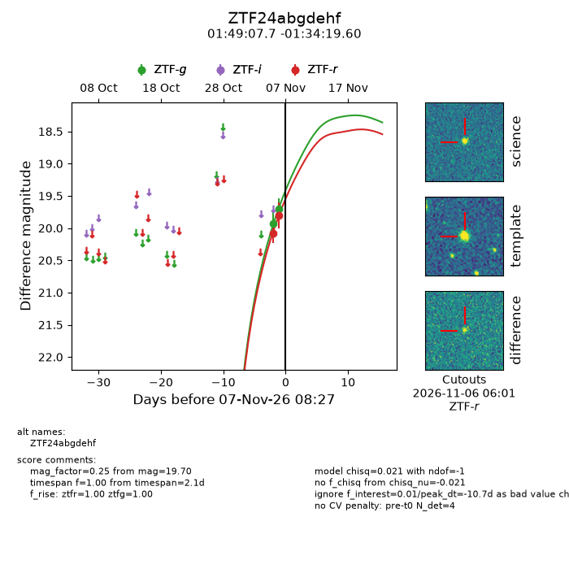
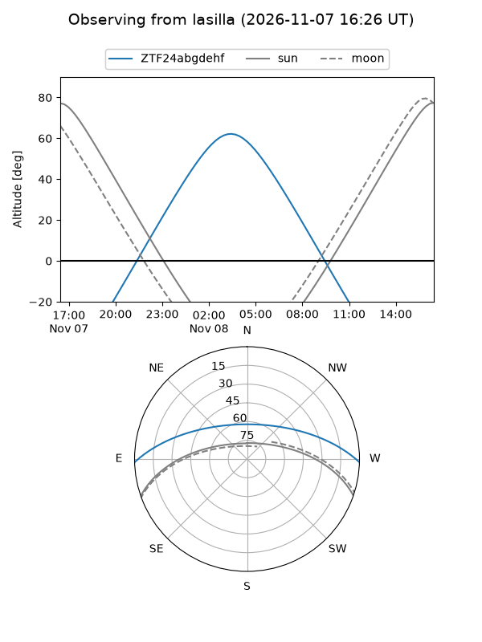
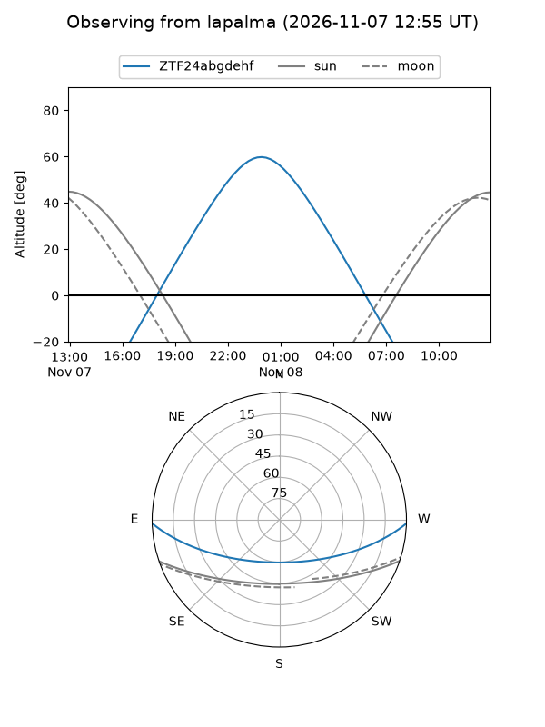
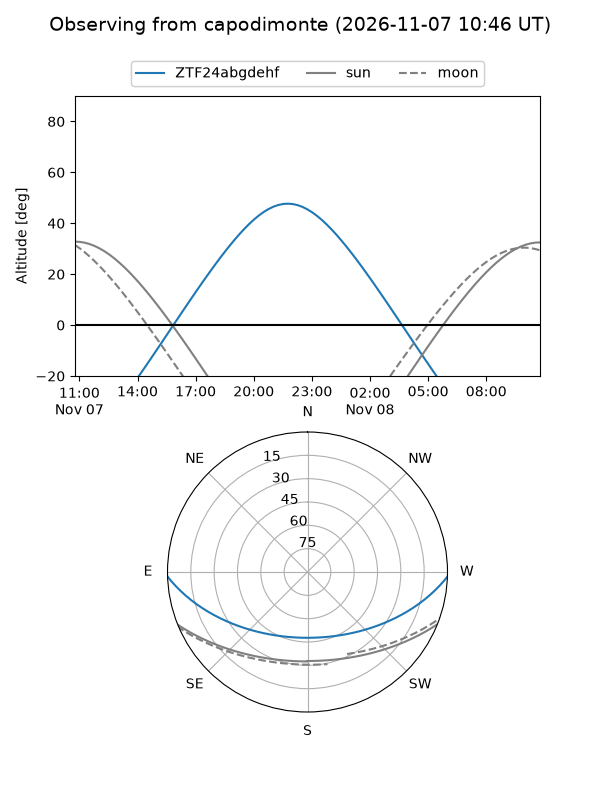
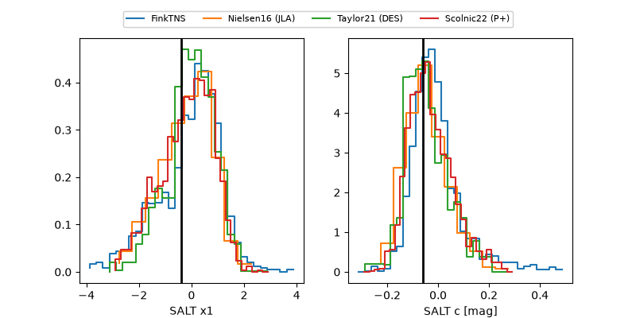

ZTF24abgdehf
Target ZTF24abgdehf at 2026-11-07 20:29
Aliases and brokers:
FINK-ZTF: ztf.fink-portal.org/ZTF24abgdehf
Lasair-ZTF: lasair-ztf.lsst.ac.uk/objects/ZTF24abgdehf
ALeRCE-ZTF: alerce.online/object/ZTF24abgdehf
Direct TNS query: direct search
alt names
ZTF24abgdehf (ztf,fink_ztf)
Coordinates:
equatorial (ra, dec) = 27.2822,-1.57211
equatorial (HMS+DMS) = 01:49:07.72,-01:34:19.60
galactic (l, b) = (153.7704,-60.94161)
Flags:
peak dt: -10.2
Photometry:
last ztfg=19.70, ztfr=19.81
2 ztfg, 2 ztfr detections
Lightcurve

Visibility



Additional plots
